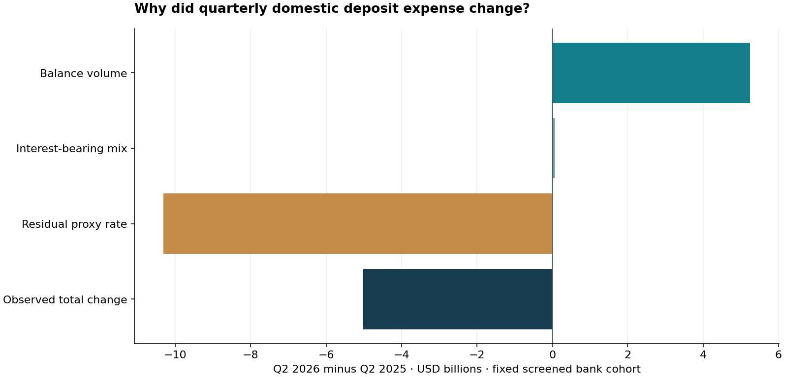

Across 4,018 comparable insured banks, quarterly domestic deposit interest expense changed by $-5.01bn from Q2 2025 to Q2 2026. The proxy-rate component contributes $-10.31bn.
Review the source of funding-cost changes before repricing deposits. An exact accounting bridge does not establish pricing power or customer retention.

Fixed cohort: 4,018 banks. Latest domestic-deposit coverage: 91.0%. Endpoint-average balances are proxies.
| cert | name | asset_bucket | proxy_rate_contribution_thousand_usd | peer_rate_gap_bp |
|---|---|---|---|---|
| 23498 | TBK BANK SSB | 1_to_10bn | 10,550.32 | 135.22 |
| 57408 | OPTUM BANK INC | over_10bn | 9,279.68 | -164.61 |
| 26312 | FIRST AMERICAN TRUST FSB | 1_to_10bn | 2,253.53 | 9.15 |
| 20099 | TEXAS EXCHANGE BANK | 1_to_10bn | 1,868.73 | 109.59 |
| 15465 | UNITED SOUTHERN BANK | under_1bn | 1,553.50 | 135.49 |
| 3603 | OLD SECOND NATIONAL BANK | 1_to_10bn | 1,399.45 | -96.13 |
| 20884 | BANK OF GUAM | 1_to_10bn | 1,350.14 | -149.96 |
| 253 | LUANA SAVINGS BANK | 1_to_10bn | 1,163.18 | 83.45 |
| 9123 | WESTERN STATE BANK | 1_to_10bn | 1,115.40 | 73.04 |
| 3285 | FIRST NATIONAL BANK TEXAS | 1_to_10bn | 1,085.00 | -59.30 |
48,814 original bank-quarters; 89 quarterly flags; 220 latest institutions excluded from the bridge. The full latest universe has 4,238 institutions. Source pointer lineage, excluded cohorts and unscreened sensitivities are retained.
No historical publication-vintage reconstruction, causal pricing elasticity, daily-average balance data or complete merger adjustment. Results support an investigation, not a blanket pricing decision.
Use the documented scenario CLI to vary targeted share, cut, attrition, replacement rate and fixed cost. The generic scenario grid is explicitly hypothetical.
Executive memo · Bank bridges · Cohort exclusions · Quarterly flags · Retention scenarios